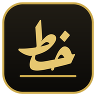
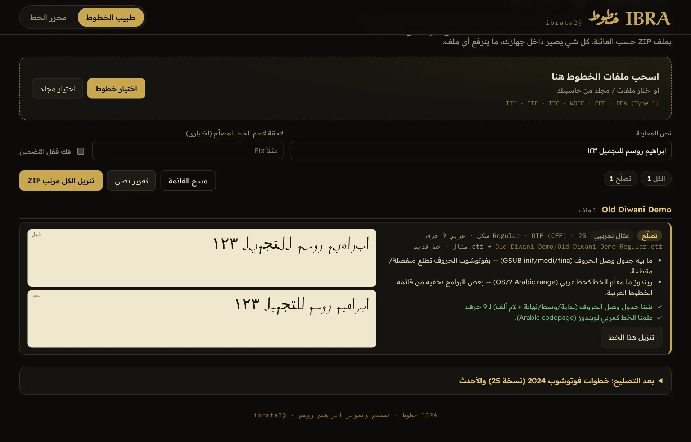
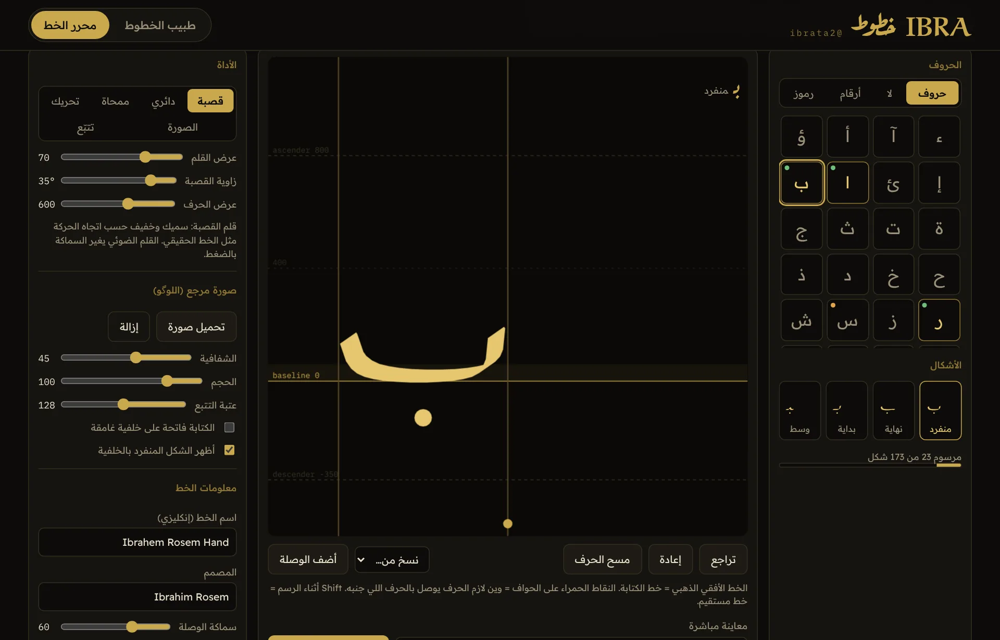

IBRA خطوطبرنامج ويندوز يفحص كل الخطوط بجهازك، يكشف ليش الخط يطلع منفصل أو مخربط بفوتوشوب والستريتر، ويصلّحه وينصّبه بضغطة. وبيه محرر ترسم بيه خطك الخاص وتطلعه ملف TTF.
Windows 10 و 11 (64-bit) · مجاني · ما يحتاج صلاحية مدير. إذا طلع تحذير ويندوز: More info ← Run anyway.
يقرأ خطوط ويندوز وخطوطك المنصبة (أو أي مجلد ترميه عليه) ويكتب لكل خط شنو مشكلته بالعربي.

وصل الحروفالخطوط القديمة اللي ما بيها جدول وصل (GSUB) يبني لها البداية والوسط والنهاية ولام ألف، فتنكتب موصولة بفوتوشوب.
خطوط Type 1 القديمةأدوبي وقف دعم ملفات .pfb و .pfm، فالبرنامج يحولها لـ OpenType تنصب وتشتغل.
الأسماء المخربطة والمكررةأسماء ماك القديمة، علامات الاستفهام، خطين بنفس الاسم يتضاربون بقائمة أدوبي — يرتبها كلها.
تنصيب بضغطةينصب المصلّح لحسابك مباشرة، ويبدّل النسخة القديمة إذا كانت منصبة لك.
ترتيب الخطوطيطلع ZIP مرتب حسب عائلة الخط، والخطوط اللي ما تتصلح بمجلد لوحدها، ووياه تقرير.
زر يمين على أي خط«افحص بـ IBRA خطوط» من قائمة الزر الأيمن على ملفات TTF و OTF و TTC و PFB.
ارسم حروفك بقلم القصبة أو تتبّع صورة لوگو اسمك، والبرنامج يبني منها خط حقيقي.

قلم قصبة حقيقيالسماكة تتغير حسب اتجاه الحركة وزاوية القصبة، والقلم الضوئي يتحسس الضغط.
تتبّع اللوگوحمّل صورة خطك وحدد الحرف بمستطيل، يتحول لشكل جاهز داخل الخط.
أربع أشكال لكل حرفمنفرد، بداية، وسط، نهاية، ولام ألف، مع معاينة مباشرة للكلمات وانت ترسم.
TTF و OTFتصدير ملف خط ينصب على ويندوز وماك ويشتغل بفوتوشوب والوورد، أو تنصيبه مباشرة من البرنامج.
البرنامج يسوي الخطوة الصعبة. هذي الخطوات اللي بعدها:
Middle Eastern and South Asian وأعد تشغيل فوتوشوب.CT Font Cache وملفات AdobeFnt*.lst وأدوبي يبنيها من جديد.